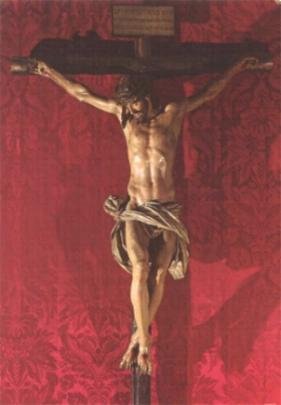

PRIMEIROS TEMPOS
INFÂNCIA
Paulo nasceu na Itália, na cidade de Ovada, próximo a Gênova, no dia 3 de Janeiro de 1694. Seu pai, senhor Lucas Danei, era comerciante de família tradicional e ilustre, e sua mãe era a senhora Ana Maria Massari, também de nobre linhagem familiar. Era um casal amoroso que vivia respeitosamente a união matrimonial, se preocupando com a família e com DEUS. O pai, nos momentos de lazer, gostava de ler livros sobre a vida dos Santos, e a mãe, era uma esposa humilde, recatada e piedosa, que vivia para o lar e para a Igreja. Tiveram 16 filhos que encheram a vida e o coração do casal. Paulo Francisco Massari Dánei foi o segundo dos filhos na sequência dos nascimentos, e foi Batizado no dia da Epifania do SENHOR (Festa Comemorativa da Manifestação do SENHOR).
Sua infância foi cercada pelo carinho dos pais, que se preocupavam em lhe dar uma sólida educação religiosa, a fim de que amasse o SENHOR DEUS e a SANTÍSSIMA VIRGEM MARIA, com devoção sincera e perseverante zelo. E sempre que ensinava ao filho, sobre as dores e sofrimentos da Paixão de NOSSO SENHOR JESUS CRISTO, que sofreu e morreu para salvar a humanidade de todas as gerações, os olhinhos da criança enchiam-se de lágrimas, e o seu coraçãozinho vibrava de emoção, revelando imenso amor e piedade.
E Paulo nunca se esquecia, sempre se lembrava das palavras e dos ensinamentos dos seus pais, todas as vezes que passava diante de um quadro ou imagem de JESUS e de NOSSA SENHORA, ajoelhava piedosamente e LHES dirigia uma breve oração.
Pela sua própria natureza, era um menino tranquilo, tinha o gênio retraído e se afastava daquelas naturais brincadeiras que acontecem no meio das crianças. Embora tendo muitos irmãos, combinava melhor com o João Batista, que era mais novo, pois tinha o gênio bem semelhante ao seu. Com o irmãozinho se entretinham construindo pequenos altares de pedras, e os adornando com flores ao lado das imagens de JESUS e da VIRGEM MARIA que estavam sempre presentes. Ali permaneciam horas e horas, comentando os ensinamentos dos pais e rezando o terço, devoção que cultivou até o final da sua existência.
Certo dia em que colhiam flores, próximo ao Rio Olha, que era estreito e tinha as margens em barranco, e também possuía águas bem velozes, com forte correnteza, os dois perderam o equilíbrio quando o barranco em que estavam cedeu e caíram no rio, sendo rapidamente levados pelas águas. Não tinham como se defender, fatalmente iam morrer. De repente, uma linda SENHORA apareceu caminhando sobre as águas, deu a mão a cada um deles e os colocou em segurança numa sólida margem, livrando-os da morte eminente. Era uma carinhosa prova de amor da MÃE DE DEUS.
Em outra ocasião, enquanto os dois rezavam diante de um pequeno altar feito por eles, onde colocaram as imagens do SENHOR e da SANTÍSSIMA VIRGEM MARIA, receberam a maravilhosa visita do MENINO JESUS, que sorrindo acenou alegremente para eles e depois de um curto tempo, desapareceu. Os dois, Paulo Francisco e João Batista ficaram maravilhados e imensamente felizes com a visita.
Outro fato que marcou profundamente a vida de Paulo Francisco foi cultivar desde jovem uma imensa devoção a Paixão de NOSSO SENHOR JESUS CRISTO. A Paixão do SENHOR foi inserida na sua existência carinhosamente pela amada mãezinha, que lhe descrevia minuciosamente a flagelação e os sofrimentos de JESUS que ficaram gravados no seu coração. Ele sempre tinha presente às terríveis chagas do SENHOR, que o fazia lembrar os cruéis padecimentos sofridos pelo Redentor. E nestas oportunidades seus olhos ficavam cheios de lágrimas que corriam por sua face. Esta sensibilidade demonstrada pela alma de Paulo nos faz imaginar que JESUS já estava preparando o menino Paulo Francisco, para a futura missão da sua vida. E para que o ensinamento ficasse bem presente na mente dele, NOSSO SENHOR apareceu-lhe diversas vezes com a coroa de espinhos, com o rosto ensanguentado e o corpo terrivelmente flagelado. Tão forte ficou a cena gravada na mente do menino, que sempre a recordava com imensa tristeza. E por isso também, desde criança quis martirizar o seu corpo, como forma de consolar JESUS, pelos imensos e abomináveis padecimentos da cruel flagelação. À noite, deixava a cama e deitava numa taboa no chão, colocando um tijolo ou uma pedra como travesseiro. Às sextas-feiras, entregava-se a muitos rigores físicos e jejuava forte, não comendo nada.
Seu irmão João Batista também aprendeu a amar as severas austeridades e a oração. Os dois irmãos sempre estavam juntos na prática daquelas mais rigorosas mortificações.
A par destes acontecimentos, a mãe não se descuidava de enviá-los ao Catecismo Paroquial no sentido de serem mais instruídos sobre as verdades da fé. Na época oportuna Paulo e João Batista receberam a Primeira Eucaristia. Paulo sorria cheio de felicidade, sabendo que JESUS estava na sua alma, junto com o DIVINO ESPÍRITO SANTO que recebeu no Batizado.
Por outro lado, como Ovada era uma pequena cidade, seus pais o matricularam em Cremolino, cidade não muito distante, a fim de terminar os seus estudos. Historicamente ficou a notícia, de que nesta cidade, Paulo que estava com 10 anos de idade, comungava com frequência, participando da Santa Missa com um fervor angélico. O pai de Paulo contratou um amigo que residia em Cremolino, era um sacerdote, mestre virtuoso e religioso carmelita, ao qual entregou o seu filho a fim de completar a educação dele. O menino era estudioso, tinha uma inteligência lúcida e boa memória. Aplicou-se nos estudos e teve grande progresso. O professor admirado observava o desenvolvimento de Paulo e o ajudava cada vez mais, satisfeito com o seu desempenho. Terminou os estudos literários com a idade de 16 a 17 anos.
SUA JUVENTUDE
Em fins de 1709, sua família mudou-se de Ovada para Campo Ligúrio, próximo a Gênova. Sua vida, no período dos 15 aos 20 anos de idade, estava fundamentada na oração, na simplicidade e na modéstia no falar e viver, desprezando as coisas do mundo e se dedicando com perseverança aos estudos, exercitando o trabalho assíduo, mantendo o mesmo fervor e a mesma piedade.
Certo dia, com a idade de 20 anos, assistindo uma pregação sobre a vida devocional, ficou emocionado, pois sentiu uma luz muito poderosa inundar o interior da sua alma revelando o seu nada, que o conduziu a se julgar um grande pecador. Na verdade o que aconteceu foi à iluminação do conhecimento da sua alma, pela Vontade Divina, deixando-o compreender a necessidade de combater os pequenos defeitos. Mas, combatê-los de modo firme, como se fossem grandes faltas, isto como exigência de uma perfeita fidelidade a DEUS. Este acontecimento lhe arrancou muitas lágrimas e o levou a visitar com frequência o Sacramento da Penitência no Confessionário, a fim de alcançar uma perfeita paz interior.
OS CRUZADOS
Naquela época a Republica de Veneza fazia preparativos de guerra contra o Império Muçulmano, que pretendia invadir a Europa e acabar com o Cristianismo. O Papa Clemente XI não se contentou em equipar os navios que pertenciam aos Estados Vaticanos, atemorizado com o perigo que corria a Cristandade, e então, apelou para os fiéis fazerem penitências e jejuns, implorando o auxílio de DEUS. Por isso, o coração de Paulo se agitou e ele sentiu o dever de atender ao chamado do Pontífice, para ajudar a salvar os cristãos. Este Divino fervor acendeu no coração dele labaredas de amor tão ardentes, que se dispôs a entregar a sua vida pela glória de JESUS Crucificado. Alistou-se na junta militar e iniciou os treinamentos com interesse e dedicação para se tornar um “CRUZADOâ€. Há poucos dias antes de embarcar em Veneza rumo ao Oriente, foi adorar o SANTÍSSIMO SACRAMENTO exposto. Rezando diante do SENHOR, JESUS lhe fez compreender que o chamava para uma milícia mais alta, aquela dos “Apóstolos do Evangelhoâ€, e não para guerrear com armas. Paulo entendeu a realidade e não vacilou, imediatamente solicitou e obteve a devida baixa do exército, retornando à sua cidade natal.
VIVENDO EM CATELLAZZO
Voltando para Campo Ligúrio, seus pais decidiram mudar para a cidade de Castellazzo e lá, Paulo continuou com mais fervor nas suas orações e na contemplação dos tormentos do Redentor, se esforçando para se identificar com o modelo Divino, exercitando as mais rigorosas mortificações, como maneira de consolar NOSSO SENHOR. Seus pais e também a sua irmã Teresa, que ouviam o movimento e barulho das suas flagelações, insistiam com ele para que moderasse com receio de ser prejudicial à saúde do filho. Ele nada dizia, mas continuava com os mesmos suplícios, inclusive dormindo sobre uma tabua lisa e tendo como travesseiro um tijolo.
Paulo inscreveu-se na Confraria dedicada a Santo Antão e cumpria o regulamento com escrupulosa fidelidade. A Igreja era o seu local predileto, lá ele permanecia longas horas recolhido junto ao Sacrário. Assistia quotidianamente a Santa Missa e comungava. Este procedimento restaurava as suas forças, que o amparava nas severas austeridades e contra as seduções do mundo, por que primordialmente ele as hauria no amor a JESUS Crucificado e na frequente recepção dos Sagrados Sacramentos.
HERANÇA PRECIOSA
A família dos seus pais, como já
mencionamos, era muito grande, 16 filhos, ou seja, Paulo tinha mais 15 irmãos e
irmãs, vivendo em extrema dificuldade financeira. E sendo Paulo o segundo filho
mais velho e o mais estudioso que o primeiro, passaram a depositar nele a esperança
de erguimento financeiro da família. Um tio que era sacerdote, Padre Cristovão Dánei
(irmão do pai dele), deu a idéia de arranjar um bom casamento para o sobrinho, conseguindo
uma moça de boa família com apreciável condição financeira. Mas Paulo não quis,
ele atendia os pais e o tio com respeito e obediência, mas não queria se casar.
O tio insistiu e arranhou uma moça bonita e rica, e o levou para 
O APOSTOLADO
Em face das suas excelentes qualidades pessoal e grande piedade, mal entrou na Confraria de Santo Antão, o elegeram presidente, por unanimidade. Paulo falava com conhecimento, facilidade e convicção do assunto, e por isso, suas palavras eram acolhidas carinhosamente por todos aqueles corações que amavam NOSSO SENHOR e NOSSA SENHORA. E assim, aproveitou a oportunidade de lhes ensinar um modo amoroso de meditar sobre a Paixão de JESUS, que permitia alcançar uma segura e rápida vereda que conduzia a perfeição espiritual. Em consequência, entre os rapazes da Confraria, oito abraçaram o Instituto dos Servos de MARIA, oito ingressaram na Ordem de Santo Agostinho e quatro se tornaram Franciscanos.
Também ele tinha grande solicitude e cuidados maternos com os pobres e enfermos. Fundou uma Sociedade Beneficente, da qual participavam diversas pessoas, com o objetivo de dar uma eficiente assistência aos necessitados, doentes e idosos, dispensando-lhes cuidados corporais e espirituais. Na sequência das suas atividades, decidiu acabar com os escândalos provocados por jovens libertinos. Com o auxílio do SENHOR DEUS, que lhe concedeu o dom de penetrar as consciências e ler o pensamento das pessoas, ele se acercava daqueles rapazes e logo sentia um estranho mau cheiro exalar daqueles jovens, indicando a sujeira das suas almas. Então ele dizia: “Meu amigo, cometeste tal (e mencionava os pecados) transgressão; vai confessar-teâ€.
O espanto e a vergonha se apoderavam do culpado, que imaginava os seus pecados totalmente ocultos. Paulo, no entanto, com doçura e bondade o animava a buscar o Sacramento da Penitência, encaminhando-o a um bom Confessor. Os que não se mostravam dóceis aos seus conselhos, lhes prediziam os espantosos castigos que viriam da cólera Divina.
Um jovem de nome Damião Carpone, era o escândalo da mocidade de Castellazzo. Paulo caridosamente o exortou a mudar de conduta, dizendo:
- “Toma cuidado, se continuares assim, perecerás em breve e de morte trágicaâ€.
O infeliz desprezou o aviso. Meses após, na margem do Rio Bórmida encontraram o cadáver dele transpassado por várias punhaladas. Após o acontecimento de diversos fatos de natureza semelhante, a santidade de Paulo Francisco passou a ser observada e respeitada pelo povo.
DIRETOR ESPIRITUAL
O Diretor Espiritual de Paulo era o Pároco de Castellazzo. Mas ele notando os dons extraordinários do jovem, logo providenciou outro Diretor com maior trabalho no campo espiritual: Frei Jerônimo de Tortona, religioso do Convento Capuchinho de Castellazzo. Este novo Diretor que era dotado de notável tato Divino, viu em Paulo Francisco, uma alma grande, destinada a eminente santidade. Começou a guiá-lo pelo caminho da perfeição, estimulando o seu desejo de viver constantemente unido a JESUS. Mas foram tão admiráveis os progressos que Paulo alcançou que alarmaram Frei Jerônimo, inclusive, ele chegou até ficar receoso de aconselhar e atrapalhar o desenvolvimento espiritual do jovem, por isso, o recomendou a outro Diretor mais experimentado e mais sábio, da mesma Ordem dos Capuchinhos: Frei Colombano de Gênova, que residia em Ovada, a 30 quilômetros de Castellazzo. Paulo aceitou e procurou Frei Colombano que o acolheu com muita simpatia.
DEUS PREPARA O FUNDADOR PASSIONISTA
Estamos em 1718 e o SENHOR começou a revelar a Paulo, a idéia da fundação de um Instituto Religioso. Inclusive, foi conduzido por um Anjo de DEUS até o inferno, onde horrorizado pode contemplar as penas eternas dos condenados. Paulo estava sendo conduzido pelo SENHOR, para compreender o infinito do inferno e o infinito do Calvário, por que neles tudo está contido: o pecado e sua malícia; a alma e seu preço; a justiça e a misericórdia de DEUS.
Mas nesta época, quando mais ele necessitava das orientações dos Diretores Espirituais, Padre Jerônimo e Padre Colombano foram transferidos, por seus Superiores, para outros locais. Os desígnios de DEUS são insondáveis! E por isso, a conselho dos próprios Confessores, tomou como novo Diretor Espiritual o Padre Policarpo Cerruti, doutor em teologia e direito canônico, e também era Cônego da Catedral de Alexandria. Mas o Cônego Cerruti ouvindo Paulo em Confissão, não acreditou nas palavras dele, por que eram fatos tão insólitos, que temendo ilusões, começou a tratá-lo com indiferença e severidade. Fazia-o esperar manhãs inteiras antes de ouvi-lo em confissão, embora Paulo estivesse em jejum e percorrido 6 quilômetros para encontrá-lo. Quando Paulo confessava as suas elevadas aspirações e santos desejos, ao invés de aconselhá-lo e dirigi-lo nas dúvidas, o Cônego Cerruti o repreendia atribuindo tudo a alucinações e o mandava estudar os Novíssimos. O SENHOR, observando o que se passava e a obediente docilidade de Paulo, inundou o espírito do jovem com clarividências celestes, atraindo-o a SI com doçura irresistível, elevando-o ao conhecimento dos altos mistérios da fé. Mas como o Diretor Espiritual o tratava de outra maneira, surgiu no interior de Paulo uma guerra titânica que debilitou seu organismo e, ele adoeceu gravemente, entre a vida e a morte. Mas DEUS quis conservar a sua existência, fazendo com que o jovem se restabelecesse perfeitamente.
Durante os êxtases de Paulo, NOSSO SENHOR continuava a lhe revelar veladamente, o futuro Instituto da Paixão, apresentando uma túnica preta e repetindo ao espírito de Paulo: “Meu filho, quem ME abraça, abraça os espinhosâ€. E também, Paulo recebeu uma extraordinária revelação do SENHOR, sobre o mistério da glorificação dos eleitos, coisas inefáveis que a linguagem humana não consegue exprimir. JESUS disse: “Meu filho, no Céu o bem-aventurado não estará unido a mim como um amigo unido a outro amigo, mas como ferro fundido no mesmo recipiente pelo fogoâ€.
Ficou definido, Paulo que amava tanto os sofrimentos de JESUS decidiu que seu Instituto terá o encargo especial de pregar JESUS Crucificado a todos os povos. Por isso, NOSSO SENHOR se comprazia em lhe mostrar em linhas incandescentes:“O Calvário é a única estrada que conduz ao Paraísoâ€.